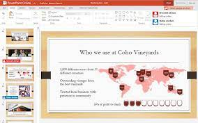

Prezentacio keszitese
Ez a kurzus a prezentacio keszites alapjait tartalmazza.
Tartalom
- Prezentacios programok szolgaltatasai
- Prezentacio felepitese
- Prezentacio keszitese, fajtai
- Szoveg es objektumok elhelyezese
- Formazas automatikus eszkozokkel
- Egyeni animacio
- Attunes, idozites
- Egyeni fomratumok beallitasa
- Hiperhivatkozas
- Kesz prezentacio keszitese